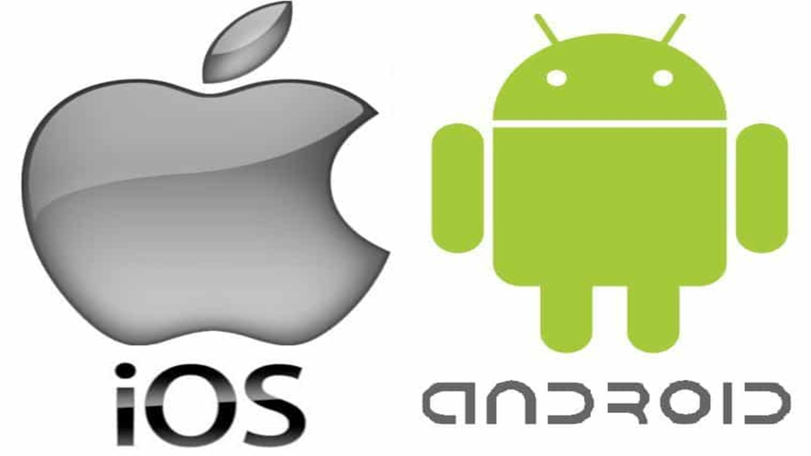
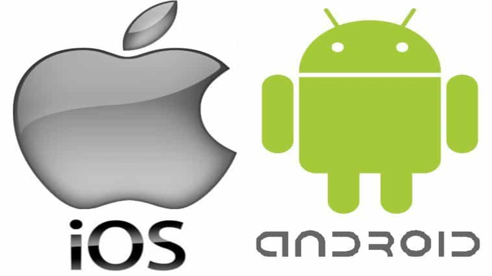

System Software is used to control the computer and its applications. Basically, the system software is used to manage the computer and allows applications to run in the background that is needed for the computer to work properly. There are different types of system software but the one I will talk about will be the Operating System. An operating system is the fundamental software that allows any computing device to run, it manages the hardware of a computer and the software as well. It forms a connection that allows both to work as a pair, something very necessary to have a good working computer. Operating Systems must be great at managing your memory, distributing processing power across parts, manage all your files, be secure, and other functions. The 3 most popular operating systems for computers are: Windows, MacOS, and Chrome OS. For phones, Android and IOS reign supreme over the rest of the competition.
Windows is by far the most popular Operating System in the world when it comes to computers. If you are reading this, there is around a 75% chance you are reading this from a Windows-run computer. Microsoft used to relese a whole new version of Windows every couple of years but have switched over to the more preferred way of constantly updating and evolving one software. Consumers do not want to but a whole new software when one gets outdated, they prefer buying one and updating it when needed. Most people are familiar with Windows and the UI it offers users. Windows is not as safe in terms of security as the other two operating systems mentioned as more people use it so it poises more risk.
MacOS is now the third most popular operatring system for computers with a little less than 10% of users using it. Obviously macOS is only available in Apple devices such as the Macbook and iMacs. Apple has also adopted an update-driven operating system that allows users to simply updatre their operating system when new updates are released. MacOs is much safer than Windows as there are fewer users on the system. If someone were to attack either Windows or MacOs, they would be able to affect much more people worldwide with Windows as millions of more people use it. This does not mean MacOs is completely safe from attacks.
ChromeOS is Googles introduction and way of introducing their own operating system for their devices. We have seen Apple and Microsoft dominate the operating system competition for years without another competitor until Google has stepped up. This is similar to how Samsung and Apple dominate the phone industry and Google is starting to rise in popularity as well. ChromeOs is a Linux-based system, that is used on their Chromebooks. Linux never grew in popularity as an operating system as its own but it is a majot part in how ChromeOs functions.
Windows is the more popular of the 3, and it is no secret why. They allow companies such as: Dell, Lenovo, Acer, and HP to use their operating system on their products. This means that Windows is readily available for anyone at a very wide range of prices. There are very cheap laptops that use Windows and very expensive PCs that use Windows as well. Windows is also more compatible with hardware and is the operating system choice for gaming computers for that reason. MacOS is made to work on their devices and hardware only, it is not available to everyone worldwide at a range of prices. Apple products are always on the higher end of prices and are seen as a luxury at times, this is another reason it is not as popular. MacOS is very simple and arguably the best feature is its compatibility with its "Apple eco-system". ChromeOS are usually used in cheaper devices out of the three and uses a more web-browser approach. Since it uses a web-browser approach, cheaper parts are able to run the software much more easily which is suitable for users with less money.
 
